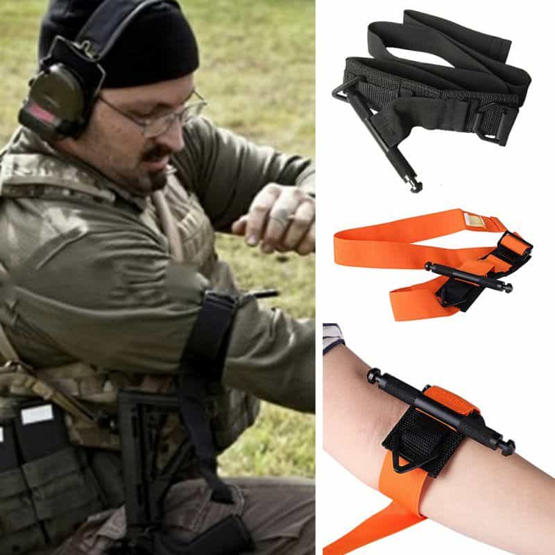
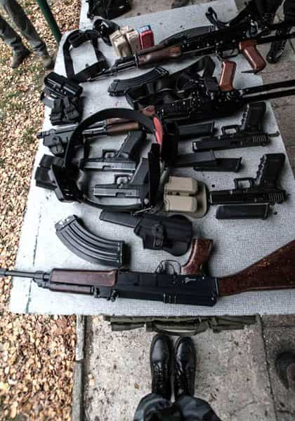
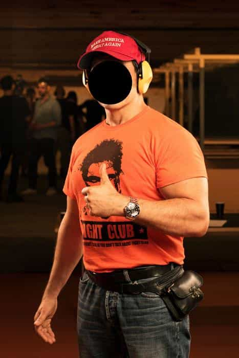

Heath is a Midwest American who is reaching towards his ancestral European roots.


Last month I was invited to review a weekend survival training conducted in English by the Hussard company in Poland for mostly French men. I’m neither French nor Polish, but I speak English and that was good enough. From attending the first day of the training, it’s clear to me that at least some Frenchmen are steeling themselves for greater conflict in their home countries while more carefully exploring the idea of expatriation.
Hussard is organized by Gregory Leroy, a Frenchman who left France for Poland five years ago. I flew into Warsaw to check out the training and see what type of man attended it. Muscular and tall, Gregory does have the physiognomy of a man who would do a training involving guns and survival. Meeting him for the first time, he came across as confident but friendly.
The rest of the fifteen French attendees didn’t jump at the opportunity to speak English, though many did warm up to me as the day went on. Besides me, the only non-Frenchmen present was a three-man crew from Vice, who came to shoot a video segment. I was concerned that they would paint everyone as “far right extremists,” but as you can see below, the end-result was reasonably balanced.
We all took shuttles from downtown Warsaw to a locally-owned gun range where we met two Polish special force operators who saw action in Afghanistan. I didn’t even know that Poles sent men to the Middle East, so it was fun to pick their brains, such as their ideas on self-defense and what they thought of other special force units (the British SAS was ranked highly and the French were ranked towards the bottom). One of the trainers was quite open is describing nationalistic views that essentially boiled down to “remove kebab,” though he stressed that Poland’s most existential enemy is more the Russians than Muslims.

We started with wound training, particularly Tactical Combat Critical Care (TC3), which is focused on stabilizing the wounded until they can be evacuated.
“Your natural instinct will be to immediately rush to the wounded, but this is a good way to get yourself killed,” the instructor said. “If you’re in a mall and there is a shooting, first wait until the threat is gone before you help anyone, or at least drag them to a hidden area.” He showed us a technique to press your knee against an artery in the leg or arm to stop bleeding while continuing to shoot the enemy, assuming you have a gun.
We were taught the MARCHE system:
M – Massive bleeding (apply pressure to arteries or put on a tourniquet)
A – Airways (make sure the wounded can breath)
R – Respiratory (check for possible pneumothorax)
C – Circulation (re-check for blood loss, apply gauze inside wounds)
H – Hypothermia and Head injuries (maintain body temperature and ensure at least one artery is feeding blood to the brain)
E – Everything else
The best thing you can do in an emergency situation is prevent the wounded from bleeding out until they get to a hospital. A tourniquet is the simplest tool to achieve that when it comes to limb wounds, and the trainers showed us how to apply one on ourselves. When a couple of the students complained of pain when the tourniquet got too tight, a trainer flatly said, “Either take the pain or die.” They tightened the tourniquet. He relayed how if you’re putting on a tourniquet for someone else, they will howl in pain as you tighten it, but that’s necessary to ensure survival.
An important fact I learned about tourniquets is that if one is on for at least ten minutes, you should not release it. The reason is that potassium builds up in cells that don’t receive oxygen, so when you undo the tourniquet, all that potassium hits your heart at once and could stop it. The good news is that you can have a tourniquet on for six hours or more (possibly up to twelve) until there is a risk of having to amputate the limb.

At 34 years of age, I have never fired a gun in my life. It’s not that I was drinking soy by the gallon, but I became so nomadic starting in my late 20’s that gun ownership never make sense, and now I live in a country where gun crime is practically nonexistent. It’s no shock I was extremely excited to finally shoot a gun at my very adult age of 34. For the training, we used Glock 17s.
The trainers taught us the basics of using a Glock: how to load and release a clip, how to reload the mag with your hands, how to release the mag, how to add bullets to the clip, and how to pull the trigger.
When I got into stance to fire my first bullet, I noticed that my hands were slightly trembling. I didn’t know if this was because ten other guys were watching me or because I’m a soft city boy who is not meant to fire guns. Even worse, maybe I’m just a pussy. Then BANG, one bullet flew threw the paper target, I released the clip, and the gun was back in my holster. I couldn’t help but smile.
There were a few more rounds of shooting two rounds at a time to fine-tune our technique, until a final round where I was instructed to fire ten rounds “really fast” without releasing the trigger all the way between each round. Launching that 10-bullet hail of gunfire was exhilarating, even though my accuracy was horrible. Inexplicably, I started giggling like a school boy.
“Why are you laughing?” the trainer asked me sternly.
“I don’t know,” I replied. The only other times I laugh for no reason is after a good orgasm or smoking weed. Immediately, I started thinking of how I could get myself a gun, maybe something discreet like an Uzi or an AK-47, and just spray bullets for the rush.
A couple of the Frenchmen were police officers, and this was apparent with their superior gun technique and accuracy. After it was all done, I added “shooting guns” to my list of masculine activities, right after “getting laid.”

After the Glock training, we drove back to Warsaw and I started thinking of the practicality of what I just learned. The wound training, at least for the Frenchmen, where there is seemingly a terrorist attack in their country every month, could certainly come in handy, especially since the trainers showed us how to use clothing or a belt as a makeshift tourniquet. The gun training is helpful if you are allowed to own guns, but since the French aren’t, their main hope is stealing a terrorist’s gun like John Wick and then using it against them. At least for me, getting introduced to gun use was invaluable in helping me decide if it’s something I want to pursue.
Back in the hotel, I sat with a group of Frenchmen and asked what they thought about the situation in France. They immediately looked down and tightened their lips. The most common refrains were “France is finished” and “Unless we fight back soon, it’s over.” In the shadow of Emmanuel Macron’s recent victory, these men were quite realistic in understanding that France as they know it is over, and something new and much more violent will take its stead, at least for the duration of their lives.
Their training in Poland wasn’t so much to learn how to kill migrants back home, but to put their mind on a footing of self-defense and survival as their country descends into a real life The Camp Of The Saints. And judging by how they complimented Poland, its women, the safety, and the lack of immigrants, I wouldn’t be surprised if most of the men return within a year for a longer trip.
As the night wore on, I noticed another great benefit of the training that Hussard offered: the ability for likeminded men to meet with one another, bond, and speak without a filter. “I can’t talk about these issues back at home,” one told me. “I’d be called a racist.” I remembered how the media and government worked so hard to shut down ROK’s meetups a little over a year ago.
My mind stirred with anger, because I know that there is nothing men can’t solve if they get together, plan, and act. The elite knows this, and will do everything they can to stop men from organizing and exercising their freedom of association, forcing the more industrious men to train and network abroad. The Frenchmen I met will go back to their homes stronger, more skilled, more connected, and more able to help their tribe, and who knows, maybe they’ll gather the collective strength to tighten the tourniquet in a country that is bleeding out as we speak, and where not much hope is left.
 If you like this article and are concerned about the future of the Western world, check out Roosh's book Free Speech Isn't Free. It gives an inside look to how the globalist establishment is attempting to marginalize masculine men with a leftist agenda that promotes censorship, feminism, and sterility. It also shares key knowledge and tools that you can use to defend yourself against social justice attacks. Click here to learn more about the book. Your support will help maintain our operation.
If you like this article and are concerned about the future of the Western world, check out Roosh's book Free Speech Isn't Free. It gives an inside look to how the globalist establishment is attempting to marginalize masculine men with a leftist agenda that promotes censorship, feminism, and sterility. It also shares key knowledge and tools that you can use to defend yourself against social justice attacks. Click here to learn more about the book. Your support will help maintain our operation.
Read Next: How The Camp Of The Saints Predicted The Migrant Destruction Of Europe